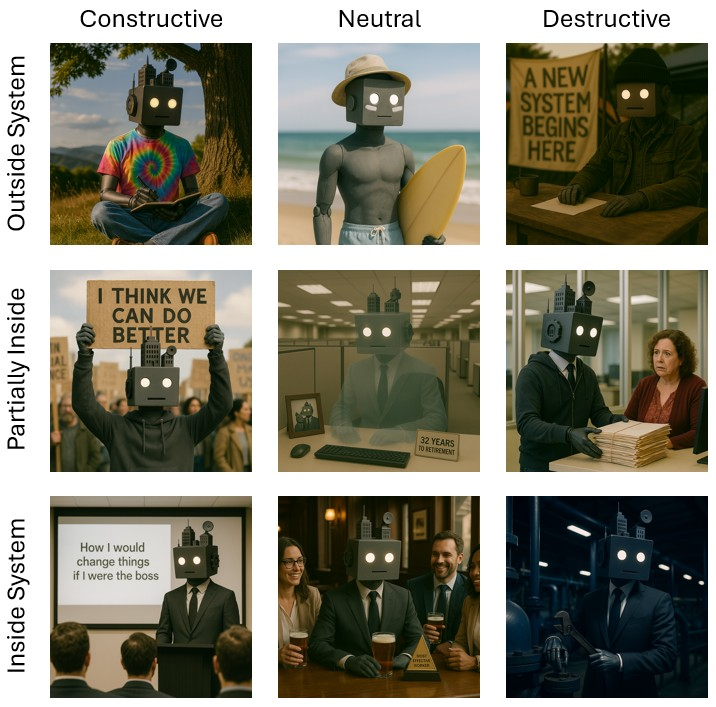

For the alignment chart I produced two axes. The vertical is for whether someone has left the system, is partially in the system, or is fully within it. The horizontal is their response, from constructive to neutral to destructive. I’ll put in a caveat before I start: when I say “destructive”, I mean destructive of the current system. These people may still be trying to build something better or address a genuine grievance, it’s more about their approach to the systems we inhabit.
The archetypes of how we respond to the system fit nicely into this little chart. They’re patterns we all carry within us, sometimes in the foreground, sometimes dormant. From time to time we drift between these archetypes, depending on life stage and circumstances. It’s almost cliché that the young would spend a gap year or two dropping out to bum around Europe or Southeast Asia before studying, starting a career, beginning a family, taking out a mortgage, before finally giving up all hope that the world can be better and voting conservative. That’s been flipped on its head recently with the stakes for Gen X being so high that if you leave your seat on the train of social expectations you might be spending the rest of your life standing.

Have a read, enjoy, and try to feel your way through where you’ve migrated over your own life.
The Dreamer
Outside of the system - Constructive

These individuals have decided to leave the system behind but are still looking for ways to make it better. They’ve seen the insanity of the day to day and attempted to move beyond it without submitting to despair. They’ll often be sitting with the theory rather than engaging collectively. But they still believe that something better can be built, imagining bold repair rather than destruction.
They’re mostly operating solo in fringe spaces; standing on soapboxes out the front of public libraries, teaching meditation in the mountains, being active in weird corners of the internet, or in the rare tenured academic positions left where corporatism hasn’t encroached. These people aren’t like activists who are trying to change things within the system, they’re looking at the underlying logic or ways of engaging with the world. They’re not trying to destroy the old, they’re imagining the new in the hope of an orderly transition. Their position is possible because their material survival is not dependent on making compromises with the system.
I’m intentionally in this corner of the chart at the moment, taking some time away from the grind, until reality encroaches again. It’s necessary, because it’s only when you’re outside of the pressures of the everyday that you can see the logic and contradictions clearly. I think there is a need to support people in this corner of the chart, they’re good for society so long as they are trying to build rather than tear down.
The Activist
Partially in the system – Constructive
These people have responded to the system by taking a half step back to put things in better focus. They believe that things can be better if only a dial were turned slightly this way or that, and use skills often honed during in-system professional careers to shape the way the world works. They are focussed on the practical, on incremental change within existing frameworks.
You’ll find them working in NOGs or unions, volunteering for political causes, being an advocate for those who can’t advocate for themselves, or spending their retirements committed to the causes they couldn’t devote enough time to during their careers. They write letters, organise and attend protests, engage with the media, and remain socially and politically active with their fellow believers. Some push harder than others, but critically, they’re using the logic and mechanisms of the system generate change rather than trying to change the system itself.
Some of the people I admire most in the world sit in this square. Their unrelenting optimism in the face of systemic inertia is admirable. I hope to join them someday.
The Insider Reformer
In the system - Constructive
These individuals accept the logic of the world as it is, participate in it eagerly, but try to fix things wherever possible. They see the fault lines but accept that their own power is limited. They are patient, accepting that things move slowly, willing to wait years for small victories. They pick their battles, focussing on one issue at a time, moving between influencing and designing solutions.
They sit completely inside systems, in the companies and public sector institutions that we all rely on. Many politicians sit in this space as well, particularly those with reform agendas. But they’re doing this in a conservative and constrained way, making sure that established interests are considered in any change. Often, these individuals have a vested interest in the continuation of the broad system as it is.
I’ve spent most of my career in this space. The best opportunities I’ve had in the big institutions I’ve worked for have been the little side projects where a systemic issue is examined with an eye for future improvement. Eventually it wears you out, particularly when you decide that it’s the underlying logic that’s the issue.
The Dropout
Outside the system – Neutral
The folks in this square decided that the system wasn’t for them, took their things, and went off to focus on the stuff that really mattered. Good on ’em. They’ve often lived through systemic injustice, or sometimes caused it, and have actively chosen to withdraw rather than fight or tolerate it. No alarms and no surprises.
They engage with the system as little as is possible. They’ll still comply by paying taxes, registering their vehicles, using the medical system, and sending their kids to school. But it’s only to minimise friction and make sure their basic needs are met. They don’t actively resist, but they don’t proactively engage either. You might hear them express quiet solidarity for those who fight for change, but it’s rarely followed by action. The disengagement itself is an active choice, one that is often accompanied by weariness.
Some of my ex-military friends are here. They did their time, earned their deployment money, went out into the bush and didn’t come back. Our forever wars were both the cause of their disillusionment and the means of their escape. I’m hanging around in the world for a bit, I think we can fix up a few things before I join them.
The Disengaged
Partially in the system – Neutral
It’s in this square that you’ll find the quiet quitters, the politically apathetic, the passive participant. These individuals still rely on the system to support their lives, mostly because of the reality of needing to work and look after themselves and their families. But they’ve given up on the system holding potential for doing good, it’s become something that just exists.
There is more to the quiet quitter than just doing the bare minimum at work. They’re conserving their energy for the things that are really important in their lives, making a choice to break with the notion that the value of a person is tied to what they produce. They engage with the systems where there is alignment in goals and are effective in using it to meet their needs. That doesn’t mean they have a stake in its success. Unlike the dropout they remain partially embedded, unable to make the active choice to step away.
I’m seeing a lot of my professional friends migrate into this square. The costs of education, housing, and just living (which we all aspire to continue to do), combined with the drift between their personal values and those of the system, are causing an ache that is hard to name, much less treat.
The Effective Operator
In the system - Neutral

You gotta do what you gotta do. The people in this square have seen the harms of the system, its contradictions, logical failings, unfairness, all of it. But they’ve passed through with the realisation that it’s better to accept and adapt than fight. They’ll go along with incremental improvements, but their primary priority is stability. They likely have a stake in continued success of the system.
These people skilfully navigate the system to achieve their goals. They have good careers, investments, memberships of clubs and community organisations. Many will operate businesses. Those who are successful in this square will accept that you win some and lose some and will appreciate that sometimes the game is unfair. But there will also be an understanding that over a long enough time horizon you’re likely to break even if you don’t make too much noise.
Most of my corporate and government friends are here. They have political, social, environmental beliefs that often contradict the actions of their employers, but they successfully segregate their workplace identities from their personal ones. They’re living proof that the system can work for people, if you can ignore the externalities.
The Breakaway
Outside the system – Destructive

The people in this square aim to destroy the system and replace it with something else. These people have seen the harms inflicted by the system, often first-hand, and have vowed to bring it down to replace it with something new. There is almost always a constructive element to their activities, including gathering communities around new ideologies and systems. However, their attitude to the system is that it is something to be replaced. They will actively resist the system through baseline tactics like non-compliance or refusal.
The use of violence against the state is more present in this square than any other. Your communist revolutionaries, sovereign citizens, anarchists, and libertarian militias fit into this square. In asserting the legitimacy for their alternative systems, they will sometimes also assert the right to use violence to defend it. Some of these movements are coherent, rooted in rigorous, if violent, ideologies. Others are less so, more the product of conspiratorial thinking, magical interpretations of law, or fantasies about absolute sovereignty.
I’ve known people at the edges of this this space personally and have encountered those fully entrenched in it while working in law enforcement. They always have a story of grievance where they felt they were up against something powerful that they couldn’t fight. So, they build alternatives, often nonsensical or fantastical, that they feel gives them the power back, not fully appreciating that the system will always be the biggest dog in the fight. Their anger is real, but their solutions are dangerous. The fact that such movements take root is an indictment of how badly the system has failed some people, and of the absence of constructive alternatives for systemic repair. But responsibility for their actions rests with them alone.
The Subverter
Partially in the system – Destructive
Here you’ll find those who turn the illogical rules of the system back in on itself. It includes tactics like malicious compliance, where individuals comply precisely with bureaucratic or employer procedures while generating as much friction as possible. These tactics are designed to tie up resources or to explicitly expose the flaws in rules. People operating here often have a limited stake in the system, like the disengaged, except their response is mischief rather than quiet retreat.
They want to express discontent but don’t want to put the energy into activism. It’s not necessarily a negative impulse and is best framed as a type of non-violent resistance born out of frustration. But it is destructive when viewed through the lens of its relationships with systems because it aims to undermine these systems, however flawed, without building alternatives.
I’ll admit to using the tactics of malicious compliance when coming up against really repugnant systems. I went back to university study in 2014 and for a few months was getting some government income support. In 2018 the government decided that I’d been overpaid by about $600, using the automated det and recovery system called Robodebt. The scheme was so horrific that it was the subject of a Royal Commission which found that the program was illegal and recommended referring bureaucrats for civil and criminal prosecution. By the time the debt notice came to me, I could afford to pay it, I was gainfully employed again. But out of principle, every time I got a notice, I’d call them up on the last day it was due and ask what my appeal rights were, before requesting further review. The weary operators on the phone would perk up with enthusiasm when I did. I kept doing that for four years before I finally had to pay up. No regrets.
The Saboteur
In the system - Destructive

This is by far the rarest archetype. Individuals in this square are members of institutions with positions of responsibility which requires them to serve the system’s interest. Instead, they use their positions to undermine or destroy. Even where the outcome is what they personally might consider a moral good, such as producing intentionally malfunctioning equipment for a war which you don’t support, its relationship with the system is destructive.
The motivation isn’t necessarily to destroy the system, it can be to subvert it and achieve goals that are opposite to those of a system. A common example is insiders who use their position to enable criminality for personal benefit. We see in both real life and fiction stories of individuals working at ports of entry for organised crime to facilitate the entry of illicit goods. The logic of the approach is betrayal.
I’ve spent some time working in the trusted insider space. Most insider threats are people who accidentally or negligently make errors where the most appropriate fix is the introduction of a control. However, there are rare cases of malicious insiders whose aim is to damage a system or institution. From their positions of power, they can do enormous harm to systems.
Conclusion
None of us sit in one of these squares forever. We drift across then depending on the stage of life, the circumstances, or how we’re feeling on any given day. Each archetype reveals something about people and the systems we inhabit. Sometimes we dream, sometimes we disengage, sometimes we get along just fine. And sometimes we rage. Taken together, they are a kind of diagnostic map, not of individuals, but how societies respond to the frictions that our systems produce.